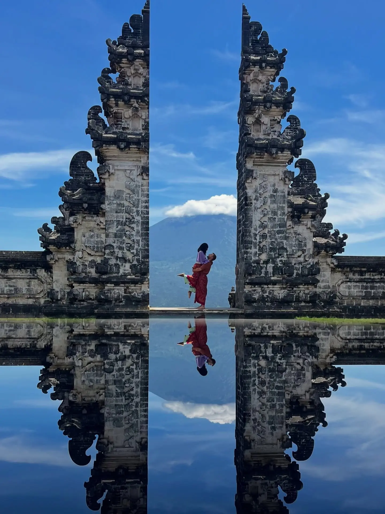

Spot 01 · Most iconic01
The Gates of Heaven
📍 Pura Penataran Agung Lempuyang · Karangasem, East Bali
This is Bali's most famous photo, and for us it was worth the early alarm. The "reflection" isn't a lake — a staffer holds a mirror under a phone to create it. We arrived right at opening (around 6–7am) to beat a line that can hit two hours by mid-morning. Mount Agung frames the gap on a clear day.
Sunrise startSarong requiredFree-ish + tip